두루 읽고 공부한 뒤에
아이에게 딱 맞는 교재를 고릅니다
시중 교재와 문제집부터 섬강중, 섬강고 내신 문제 및 수능, 모의고사 5개년 기출 문제 등을 샅샅이 살피고 연구합니다.
아이에게 맞는 교재와 자료로 수업을 구성합니다.
국내외 영어 교육 자료 및 교재를
샅샅이 섭렵하고 공부합니다
시중 문제집과 교재는 물론 영어 콘텐츠, 수능, 모의고사, 학력평가, 진단평가 등
방대한 데이터를 바탕으로 자료를 분석하고, 아이에게 맞는 접근법을 찾습니다.
아이의 수준과 필요에 맞춰
교재를 골라 씁니다
표지를 누르면 시리즈의 모든 권과 설명이 펼쳐집니다.
교육부 권장 초등 영단어 800개를 포함한 필수 어휘 1,000개를 학교, 가족, 음식 같은 주제별로 묶어 익히는 초등 어휘 교재입니다. 단어, 문장, 스토리의 3단계로 학습하며 MP3 음원을 함께 제공합니다.
초등 필수 어휘 800개와 중학교 1학년 교과서 필수 어휘를 다루는 초등 어휘 교재입니다. 기본은 400개, 필수는 500개를 하루 12개 또는 16개씩 40일에 익히고 따라 쓰기 코너와 미니북이 들어 있습니다.
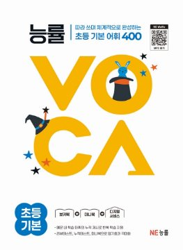

Cambridge YLE 단어 목록에서 고른 초등 필수 어휘를 주제별로 익히는 어휘 교재입니다. 읽기, 듣기, 말하기, 쓰기 활동으로 어휘를 문맥 속에서 익히며 YLE Prep Test를 부가자료로 제공합니다.


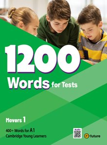
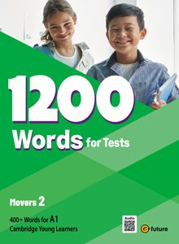


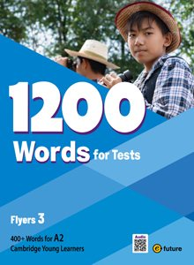
교과서를 바탕으로 하루 10~12개씩 주제별 단어를 익히는 초등 어휘 교재입니다. 단어에서 구, 문장, 리딩으로 넓혀 가며 공부하고 권마다 워크북이 들어 있습니다.


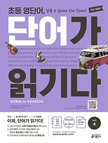
주제별로 묶은 단어 목록과 읽기 글로 핵심 어휘를 익히는 교재입니다. 쉬운 뜻풀이와 예문, 동의어와 반의어가 있고 단어와 읽기 글은 QR 코드로 들을 수 있습니다.
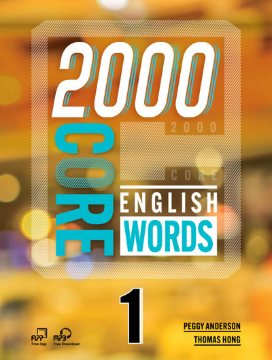
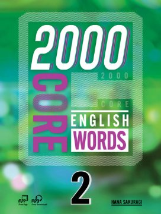
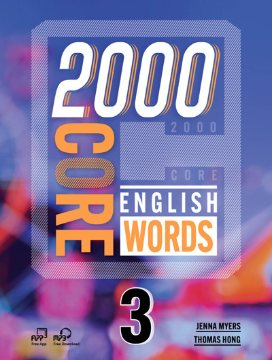
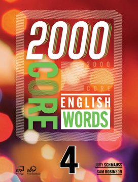
레슨마다 단어 목록과 뜻, 문장 예시를 보고 짝짓기, 뜻 파악, 읽기 지문과 이해 문제로 어휘를 익히는 학년별 어휘 교재입니다. 2~12권에는 비문학 지문과 복습 문제가 들어 있고, 학생용 책에는 단어 학습 사이트 퀴즐렛 이용권이 포함됩니다.
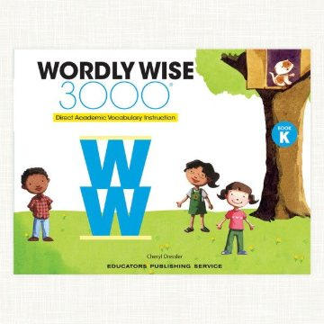
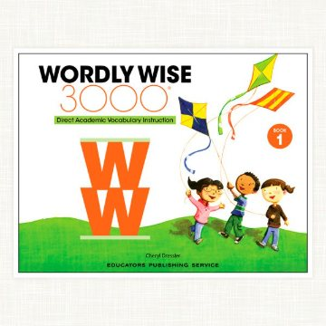


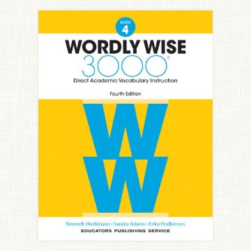
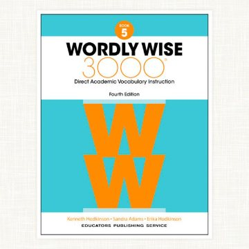
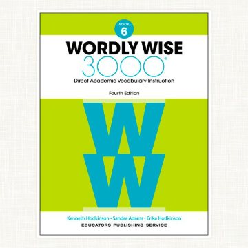
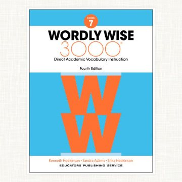


교육부 지정 단어와 교과서에 나오는 중등 필수 어휘를 주제별로 묶어 익히는 중등 어휘 교재입니다. 1,001개 문장으로 단어 쓰임을 복습하고 휴대용 암기장과 MP3, 온라인 쎄듀런 P보카 이용권을 함께 제공합니다.
필수 권은 중학 필수 어휘 1,000개와 초등 중요 어휘 300개를, 고난도 권은 고난도 중학 어휘와 고등 기초 어휘 1,000개를 다루는 중등 어휘 교재입니다. 주제별로 묶어 암기 요령과 함께 익히고 휴대용 암기장을 제공합니다.


중학 교육과정 권장 어휘와 교과서 어휘를 빈도와 중요도에 따라 골라 정리한 중등 어휘 교재입니다. 기본 1,000개, 필수 1,200개, 고난도 1,200개, 숙어 700개를 하루 분량으로 나누어 익힙니다.

중학교 교과서와 내신에 자주 나오는 단어를 주제와 이야기로 연결해 익히는 중학 어휘 교재입니다. 짧은 기출 예문으로 공부한 단어를 하나의 이야기로 다시 모아 보고 워크북으로 복습합니다.

영어에서 자주 쓰이는 단어를 6권으로 나눠 단계별로 익히는 어휘 교재입니다. 단어마다 뜻풀이와 예문, 이미지가 있고 단어와 이야기를 담은 MP3 음원을 무료로 제공합니다.


한 단원에서 단어 20개를 10개씩 두 묶음으로 나누어 익히는 중고등 어휘 교재입니다. 역사 글, 사설, 설명문 같은 비문학 지문 속에서 단어를 만나고 뜻, 문맥, 문장 완성, 유의어와 반의어 문제를 풉니다.


수능과 내신에 나오는 고등 필수 어휘를 단계별로 나눠 익히는 어휘 교재입니다. 고교기본은 1,260개, 수능은 1,800개 단어를 담았고, 어원편은 접두사·접미사와 어근으로 어휘를 익히며 단어 암기장과 음원을 함께 제공합니다.


단어의 유의어와 반의어를 함께 학습하며 어휘를 넓혀 가는 고등 어휘 교재입니다. 유의어·반의어 확인 퀴즈, 최신 기출 경향의 예문, 미니 단어 암기장과 원어민 음성 MP3를 제공합니다.

교육부 권장 어휘와 교과서, 모의고사, 수능 어휘를 분석해 골라 담은 고등 어휘 교재입니다. 기본 1,200개를 40일에, 수능 필수 2,000개를 60일에, 수능 고난도 2,000개를 50일에 익히고 워크북과 미니북을 함께 제공합니다.

토플 필수 어휘 1,800개를 유의어 중심과 영영풀이 중심으로 나누어 익히는 TOEFL iBT 어휘 교재입니다. 유의어, 파생어, 반의어, 예문과 함께 헷갈리는 어휘와 관련 어휘를 TIPS로 정리했습니다.
예문을 읽고 규칙을 찾아 적용하고 확인하는 3단계로 익히는 초등 영문법 교재입니다. 예문과 연습문제 MP3, 전 유닛 무료 유튜브 강의, 복습용 워크북을 함께 제공합니다.


교과서와 원서에 자주 나오는 문장 패턴 110개와 실생활 문장 1,001개를 3권에 나누어 익히는 초등 교재입니다. 듣기, 읽기, 말하기, 쓰기를 문장 중심으로 함께 연습하며 미국 초등학생 원어민이 녹음한 MP3와 유닛별 무료 유튜브 강의를 제공합니다.

초등 고학년을 위한 필수 문법과 심화 문법을 다루는 초등 영문법 교재입니다. 개념 이해, 문제 풀이, 문장 쓰기의 3단계로 공부하고 본책에 워크북과 단어 쓰기 연습지가 들어 있습니다.


초등 단계에 꼭 필요한 문법을 골라 6단계로 나눈 초등 문법 교재입니다. 도식과 예문 중심으로 간단히 설명하고 연습문제와 실전 유형 테스트, 워크북으로 반복 연습합니다.


하루 한 가지 문법에 집중해 품사, 시제, 문장의 확장까지 단계별로 익히는 초등 영문법 교재입니다. 문법 개념 학습, 문장 속 쓰임 적용, 유닛 복습, 학습 결과 점검 순서로 구성되며 Action Book이 책 속의 책으로 들어 있습니다.


문법 규칙을 이해한 뒤 일부 문장 쓰기에서 전체 문장 쓰기로 넓혀 가는 초등 영문법 교재입니다. 3권에는 수동태, to부정사, 접속사 등 중학 영어에 필요한 문법과 문법 요점 정리표가 들어 있습니다.
문법 패턴을 반복해 읽고 말하며 익히는 초등 문법 교재입니다. Basic과 Intermediate 두 단계에 각각 1~3권이 있고 본책은 88쪽입니다.


초등 교육과정과 어휘를 반영해 만든 3권짜리 문법 교재입니다. 배운 내용을 다시 만나게 하는 나선형 구성이고 예비 중등을 위한 문법 기반 쓰기 연습과 문법 차트, 중간·기말 테스트가 있습니다.


1,001개 예문으로 중등 영문법을 익히는 교재로, 복잡한 문법 내용을 짧은 POINT로 요약해 보여 줍니다. 전국 내신 문제를 분석한 연습 문제와 서술형 문제가 든 워크북이 함께 들어 있습니다.


개정 교육과정과 중학 영어 교과서 10종의 핵심 문법을 반영한 중등 내신 문법 교재입니다. 빈칸 활동과 설명으로 개념을 이해하고 기초부터 서술형까지 단계별 문제를 풀며, 워크북과 개념노트를 함께 제공합니다.


개념 이해, 연습, 실전 적용을 한 페이지씩 이어서 공부하는 중등 영문법 교재입니다. 개념마다 대표 기출 유형 문제가 붙어 있고 마무리 실전 문제 3회와 워크북, 개념노트를 제공합니다.

개념을 단계별로 익히고 3개 챕터씩 누적해 점검하는 중등 실전 문법 교재입니다. 본책과 온라인 추가 문제를 합쳐 권당 약 5,400개의 문법 문제를 담았고 빈칸으로 정리하는 핵심 개념 노트를 제공합니다.

구문이 낯설거나 문법 기초가 부족한 중학생이 구문 공부를 시작하도록 만든 교재로, 필수 구문과 문법을 1,001개 문장에 담았습니다. 문장 구조를 그림으로 보여 주고 연습 문제가 든 워크북을 함께 제공합니다.
중학교에서 다루는 핵심 문법을 4단계로 익히는 문법 교재입니다. 개념 학습, 단계별 문제, 단원 정리, 워크북 순서로 구성하고 쓰기 문제로 문장 쓰기 기본기를 다집니다.
핵심 문법을 골라 단계가 올라갈수록 내용을 더하고 핵심 개념은 반복해서 다루는 문법 교재입니다. 자세한 해설과 예문, 서술형 대비 쓰기 문제, 챕터별 누적 테스트와 워크북이 들어 있습니다.

문제로 마스터하는 중학 영문법이라는 뜻으로 새 교육과정과 교과서를 분석해 만든 문법 교재입니다. 세분한 목차에 맞춰 주관식 문제를 풀고 내신 대비 테스트와 서술형 연습, 워크북, 총괄평가 2회분으로 마무리합니다.
구문이 독해로 이어지도록 문장 구조를 도식으로 보여 주는 중학 구문 교재입니다. 학년별 필수 구문을 다루고 다양한 소재의 문장과 지문, 내신 유형의 서술형 문제를 함께 담았습니다.

기초부터 내신까지 준비하는 중학 영문법 교재입니다. 중학 필수 문법을 실용적인 예문과 간결한 설명으로 정리하고 내신 실전 모의고사 2회와 서술형 워크북을 제공합니다.


중학 교육과정을 반영한 목차로 문법 개념과 규칙을 정리하고 내신까지 대비하는 중학 영문법 교재입니다. 문법 미리보기, 개념 학습과 확인 문제, 영작 연습, 내신 실전평가로 구성되며 Workbook이 책 속의 책으로 들어 있습니다.
중학 영문법을 배우고 문장 쓰기로 이어 가며 서술형까지 준비하는 교재입니다. 학년별 한 권씩이고 1학년은 최신개정판이며 정답과 해설이 함께 있습니다.

중고등 학생을 위한 6권짜리 문법 시리즈입니다. 문법 포인트와 핵심 예문을 정리해 두었고 연습문제와 자주 틀리는 부분을 짚는 Further Learning 코너가 있습니다.


문장을 끊어 읽고 구문을 분석하며 영어 문장 구조를 익히는 고등 구문 교재입니다. 기본은 1,001개, 입문·핵심·완성은 각 500개 문장으로 구성되고 천일비급 별책이 함께 들어 있습니다.

길고 복잡한 문장에서 핵심을 찾는 문장 줄이기와 헷갈리는 구문을 구별하는 함정 피하기, 두 권으로 된 구문 학습서입니다. 12개 챕터로 이루어진 단기 집중 교재이고 수능·모의 기출을 응용한 문장을 사용합니다.

고등 영어의 기본 문법 포인트를 101개 유닛으로 나눠 예문 중심으로 익히는 문법 교재입니다. 교과서·모의고사·수능 기출 예문을 담았고 챕터마다 내신 유형 문제와 어법 POINT BOOK을 제공합니다.
수능과 모의고사에 나온 31개년 기출 어법 포인트를 정리한 고등 어법 교재입니다. START에서 시작해 실력다지기와 ESSENTIAL로 개념을 익히고 실전 모의고사로 마무리하는 순서이며 휴대용 개념 암기북을 제공합니다.


고등 문법과 어법을 개념 학습에서 적용 훈련까지 7단계로 익히는 교재입니다. 시험에 나오는 어법 포인트를 정리하고 서술형 훈련과 내신·학평 대비 미니 모의고사를 함께 담았습니다.
핵심 문법을 골라 단계가 올라갈수록 내용을 더하고 핵심 개념은 반복해서 다루는 고등 문법 교재입니다. 문법이 담긴 지문으로 독해와 이어 공부하고 챕터별 누적 테스트와 워크북이 들어 있습니다.


문제로 마스터하는 고등 영문법이라는 뜻으로 고등 문법을 한 권에 담았습니다. 16개 챕터와 126개 문법 포인트로 나누어 간결한 설명과 기출 문장, 주관식 문제와 Review Test로 공부합니다.

수능 영어에 필요한 구문을 3단계로 나누어 익히는 고등 구문 교재입니다. 직접 구조를 표시하며 연습하는 손독해 연습장 형태이고 총 268쪽입니다.

20개년 수능 기출을 분석해 문맥 중심으로 어법과 어휘를 반복 훈련하는 고등 교재입니다. 끊어 읽기 훈련과 나만의 채점표가 있어 약한 부분을 확인할 수 있습니다.

교육부 권장 초등 필수 단어를 지문 속에서 익히며 단계별로 독해력을 쌓는 초등 독해 교재입니다. 이야기 지문과 정보 지문을 반반 담았고 워크북과 단어 쓰기 노트를 함께 제공합니다.


독해를 처음 시작하는 학생을 위한 초등 독해 교재입니다. 다양한 소재의 지문과 배경지식 코너, 직독직해 워크시트를 함께 담았고 렉사일 지수로 단계를 나누었습니다.


영어 문해력을 키우기 위한 초등 독해 교재입니다. 직독직해로 읽고 추론과 적용 문제로 생각하고 요약으로 쓰는 세 단계로 한 지문을 공부합니다.

과학, 사회, 역사, 예술 등 다양한 분야의 논픽션 지문으로 읽기를 연습하는 초등 독해 교재입니다. Lexile 지수와 CEFR 기준으로 나눈 6단계이며 Workbook과 Word Book이 책 속의 책으로 들어 있고 AI 발음 피드백 기능인 Reading Fluency Builder를 제공합니다.


Reading Fluency를 키우기 위해 단계별로 설계한 초등 독해 교재입니다. 교과 주제를 담은 Fiction과 Nonfiction 지문을 읽으며 Workbook과 Word Book이 책 속의 책으로 들어 있고 단어 앱과 오디오 QR을 제공합니다.


기본 동사 하나가 이야기 속에서 여러 뜻으로 쓰이는 모습을 읽으며 독해력을 기르는 초등 독해 교재입니다. 권마다 본문 64쪽과 워크북, 정답이 함께 있습니다.
교과 주제의 논픽션 지문으로 어휘와 핵심 문장 패턴(Key Pattern)을 함께 익히는 독해 교재입니다. 2022 개정 교육과정을 반영했고 20여 종의 교사용 부가자료를 제공합니다.


진로, 문학, 기술, 수학, 사회, 경제, 역사, 예술, 체육 등 여러 교과 소재의 지문을 읽는 독해 교재입니다. 지문에 맞춘 어휘·독해 기술과 그래픽 오거나이저 활동, 21세기 4C 스킬 활동이 들어 있습니다.


재미있는 소재의 영어 지문을 읽으며 중등 필수 구문과 필수 단어를 함께 익히는 중등 독해 교재입니다. 지문마다 1일 1문장 코너가 있고 워크북, 단어장, 지문과 단어 MP3를 제공합니다.


중학생이 수능 영어를 미리 준비하도록 만든 시리즈로 문법·어법 2권과 독해 2권으로 이루어져 있습니다. 문법·어법 권은 중학 문법을 먼저 익힌 뒤 관련된 수능 빈출 어법을 학습하며 내신 서술형 문제도 함께 풉니다.


중학 영어 독해의 기본기를 다지는 독해 교재입니다. 다양한 소재의 지문과 배경지식 코너, 내신 대비 서술형과 수능 유형 문항, 직독직해 워크시트를 담았습니다.


기초부터 내신까지 준비하는 중학 독해 교재입니다. 과학, 사회, 문화 등 재미있는 소재의 지문과 내신 경향을 반영한 문항, 구문 해설과 복습용 워크북을 제공합니다.

중학 수준에 맞춘 수능 지문으로 깊이 있게 읽는 법을 익히는 독해 교재입니다. 지문마다 수능 유형 문제를 2개씩 풀고 어휘 암기와 어휘 확장 코너로 정확한 독해를 돕습니다.

초등 고학년부터 중학생까지 쓰는 4단계 원서형 독해서입니다. 한 유닛에 서로 관련된 지문을 두 개씩 싣고 설명문, 편지글, 인터뷰, 소설 등 여러 형태의 글과 다양한 독해 문항을 담았습니다.
공통 주제로 묶은 두 개의 lesson을 읽고 복습하는 구조의 중등 독해 교재입니다. 다양한 주제의 non-fiction 지문과 graphic organizer를 쓰고 reading, writing, listening, speaking 활동을 함께 합니다.


공통 주제로 묶은 두 개의 lesson을 읽고 복습하는 구조의 중등 독해 교재입니다. 다양한 주제의 non-fiction 지문과 graphic organizer를 쓰고 TOEFL 스타일 문제와 4 Skills 활동을 제공합니다.


수능 영어 독해 12개 유형을 중학생 눈높이에 맞춰 하루 한 유형씩 연습하는 독해 교재입니다. 매일 3단계로 풀고 12일에 한 권을 마치며 워크북과 해설이 함께 있습니다.

진로, 문학, 기술, 수학, 사회, 경제, 역사, 예술, 체육 등 여러 교과 소재의 지문을 읽는 독해 교재입니다. 지문에 맞춘 어휘·독해 기술과 그래픽 오거나이저 활동, 21세기 4C 스킬 활동이 들어 있습니다.

독해와 쓰기, IT 활용을 함께 익히는 통합 독해 교재입니다. 한 단원을 Lesson A와 B로 나누어 한 주제를 논픽션과 픽션으로 읽고, 교육부 개정 교육과정과 미국 교과과정을 함께 반영한 주제를 다룹니다.


도표, 일기, 편지, 이메일, 인터뷰, 광고, 뉴스 기사 등 실용 지문으로 구성한 독해 교재입니다. 논픽션 주제를 늘렸고 읽기 속도를 재는 Timed Reading과 주요 어휘를 정리한 Word Box가 들어 있습니다.


한 가지 소재를 서로 다른 글 형식으로 읽으며 깊이 있게 이해하도록 만든 독해 교재입니다. 독해 연습 문제와 글의 구조를 살피는 워크북 문제, 그래픽 오거나이저와 본문 요약 활동이 들어 있습니다.


여러 주제의 지문을 모은 독해 교재로 1~3권이 FK Level 4에서 7 수준으로 이어집니다. 단어 목록, 지문 스크립트, 정답, 시험지 등의 자료를 출판사 사이트에서 내려받을 수 있습니다.


내셔널 지오그래픽의 사진과 실제 이야기를 읽으며 독해 기술과 학술 어휘를 익히는 영어 독해 교재입니다. 읽기 기술 연습, 목표 어휘 연습, 내셔널 지오그래픽 영상이 함께 들어 있습니다.


수능 독해 지문에서 많이 쓰이는 주장글과 설명글을 한 권에 한 유형씩 집중해서 읽는 고등 독해 교재입니다. 지문 240개를 8권에 30개씩 나눠 실었고 기출 간접 연계 지문과 구문 독해 TIP을 담았습니다.


수능 독해 문제 유형 17가지를 해결 전략과 함께 익히는 유형편과 모의고사로 적용하는 실전편으로 나뉜 교재입니다. 전 지문에 직독직해와 구문 분석을 제공하고 본문 MP3와 어휘 리스트 등을 무료로 받을 수 있습니다.

수능 영어의 핵심만 12강으로 빠르게 정리하는 단기 학습서로 모두 4권입니다. 유형별 출제 분석과 해결 전략을 먼저 배우고 연습문제, 누적 Review Test, Final Test로 점검합니다.

오답률이 높은 빈칸 추론, 글의 순서, 문장 삽입, 함의 추론 유형을 다루는 수능 독해 교재입니다. 전략편은 유형별 기출로 전략을 익히고 실전편은 9문항짜리 미니 모의고사 15회분으로 적용합니다.
문장 성분을 넓혀 가는 방식으로 문법에 접근해 독해 기본기를 세우는 고등 독해 교재 시리즈입니다. 최신 수능 경향의 지문과 서술형 주관식 문제, 복습용 Review Test를 담았습니다.


직독직해, 구문, 문법독해, 수능 유형, 어법·어휘 유형으로 나뉜 고등 독해 교재 시리즈입니다. 직독직해편은 끊어 읽기 전략을 단계별로 배우고 연습문제와 수능 독해 지문으로 적용합니다.


수능 영어 독해를 처음 시작하는 단계부터 실전 모의고사까지 이어지는 시리즈입니다. 최신 수능과 학평, 모평 출제 경향을 분석해 만들었고 미니 모의고사와 실전 모의고사로 연습합니다.


전국연합학력평가와 수능 기출 지문으로 단어, 구문, 독해를 이어서 공부하는 고등 독해 교재입니다. 학년별 한 권씩이고 매일 3단계로 풀며 해설이 함께 있습니다.
수능 독해를 유형별로 나누어 지문의 핵심과 정답 단서를 찾는 방법을 익히는 고등 독해 교재입니다. 재진술 연습문제와 오답 해설, 수능 팁이 들어 있고 총 320쪽입니다.
Updated TOEFL을 처음 접하는 학습자를 위한 기초 단계 교재입니다. 영역별로 기초부터 실전까지 20일 분량으로 구성하고 iBT 실전모의고사를 담았습니다.


토플 중급 학습자를 위해 영역별 20일 분량으로 구성한 Updated TOEFL 교재입니다. 문제 유형별 공략법과 연습문제, 실전문제, 실전모의고사를 담았습니다.


기본 전략부터 실전까지 한 권으로 학습하는 Updated TOEFL 정규 교재입니다. 영역별 핵심 전략과 자주 나오는 패턴을 익히고 연습문제, 실전문제, 실전모의고사로 연습합니다.

실제 시험과 같은 구성의 실전모의고사로 마무리하는 Updated TOEFL 교재입니다. 리딩과 리스닝은 10회분, 스피킹과 라이팅은 17회분이며 온라인 모의고사 일부를 포함합니다.

최근 국제 사회에서 화제가 되는 다양한 주제의 기사형 짧은 글을 읽는 독해 교재입니다. 읽기 지문과 이어진 쓰기 활동으로 수행평가를 대비하며 한 권은 20유닛, 유닛마다 6쪽입니다.

읽기 속도와 정확성을 함께 기르는 속독 훈련용 독해 교재입니다. 권마다 200~350단어 지문과 500~1400단어 어휘 범위로 이어지며 원어민 수준인 분당 250단어 읽기를 목표로 연습합니다.
논픽션 기사문을 읽으며 글 내용을 그림으로 정리하는 인포그래픽 활동을 함께 하는 독해 교재입니다. 중급 이하 학습자도 읽도록 수준을 조절했고 속독 연습용 Reading Fluency Workbook이 따로 있습니다.


학술 주제와 시사 주제의 지문으로 배경지식과 독해력을 기르는 고등·대학 수준 독해 교재입니다. 수능 유형 문제풀이와 어휘 학습, 글 구조를 그림으로 파악하는 활동이 있고 한 권은 12유닛입니다.


독해와 비판적 사고 기술을 함께 익히는 아카데믹 독해 교재입니다. 주제별 쓰기 연습과 토론 활동, 학술 단어 목록(AWL) 어휘 연습이 단원마다 들어 있습니다.

학술 주제의 읽기 지문을 바탕으로 독해와 쓰기, 비판적 사고를 함께 훈련하는 교재입니다. 단원마다 사진과 영상, 어휘 확장 활동과 쓰기 지도 코너가 들어 있습니다.


TED 강연 주제를 읽기 지문으로 삼아 핵심 독해 기술과 어휘, 비판적·창의적 사고를 익히는 중상급 독해 교재입니다. 단원마다 강연 영상과 읽기, 어휘 활동이 이어집니다.

초등 천일문 그래머와 병행할 수 있는 목차로, 문법을 문장 쓰기로 연결해 연습하는 초등 영작 교재입니다. 각 유닛의 내용을 중등 서술형 유형으로 정리해 보고 복습용 워크북을 함께 제공합니다.


문법 용어보다 영어 어순에 익숙해지도록 문장 쓰기를 단계별로 연습하는 초등 쓰기 교재입니다. 1~3권은 초등 교육과정의 기본문과 의문문을, 4~6권은 중학교 과정의 복문까지 다룹니다.

주제별로 구성한 초등 듣기 교재로 초등 교육과정의 의사소통 기능을 반영했습니다. 한글 기반으로 쉽게 접근할 수 있고 QR 코드로 음원을 바로 들으며 주요 문장 받아쓰기를 합니다.


일상적인 대화에서 시작해 배운 표현으로 자신의 생각을 스피치로 완성해 가는 초등 스피킹 교재입니다. 대화에서 스피치까지 6단계 과정으로 연습하며 Workbook & Portfolio와 Expression Book이 책 속의 책으로 들어 있습니다.


글쓰기 단계를 따라가며 한 문단을 완성하는 초등 쓰기 교재입니다. 준비, 초안, 고쳐 쓰기 순서로 진행하고 구두점 연습과 읽기·듣기·말하기로 넓히는 프로젝트 쪽이 있습니다.
문단 쓰기를 마친 학생이 에세이로 나아가는 쓰기 교재입니다. 에세이 틀을 보고 초안을 쓴 뒤 고쳐 쓰는 단계로 진행하고 읽기·듣기·말하기 프로젝트가 이어집니다.


초급에서 중급 학습자를 위한 듣기·말하기 시리즈입니다. 관심 있는 주제의 다양한 형식의 글을 듣고 단원 목표를 따라 말하며, 학생용 책과 연습책, 온라인 자료로 구성됩니다.


핵심 문법을 Point별로 익히고 기초 배열과 영작부터 고난도까지 단계별로 푸는 중등 서술형 영작 교재입니다. 천일문 중등 GRAMMAR와 목차가 이어지고 논술형 수행평가 연습 10회분과 워크북을 제공합니다.

중학 영어 교과서 13종의 문법과 표현을 문장 쓰기에 맞춰 정리한 중등 서술형 교재입니다. 한 페이지로 핵심 문법을 정리하고 문제를 풀며, 3단계 내신 서술형 잡기와 책속책 워크북으로 연습합니다.


실제 시험보다 빠른 속도로 듣기를 연습하도록 만든 중학 영어듣기 교재로, 실전 모의고사 20회와 시도 교육청 기출 듣기평가 5회분을 담았습니다. 기본 속도, 더 빠른 속도, 받아쓰기용 천천히 듣기의 3단계 MP3를 제공합니다.
전국 시도 교육청 영어듣기평가를 대비하는 중학 듣기 교재입니다. 유형 분석과 기출 2회, 실전 모의고사 18회, 고난도 모의고사 2회로 구성하고 매회 받아쓰기와 음원을 제공합니다.

핵심 문법 개념과 예문을 정리한 뒤 빈칸 완성, 문장 완성, 순서 배열 순으로 서술형을 단계별로 연습하는 중등 교재입니다. 권마다 문법 챕터 8~9개로 구성되며 정답 및 해설이 책 속의 책으로 들어 있습니다.
영작에 자주 나오는 유형을 단계별로 익히며 내신 서술형과 수행평가를 준비하는 교재입니다. 권마다 본책과 워크북, 정답과 해설이 함께 있습니다.


일상 주제별로 단원을 나눈 중등 쓰기 교재로 초·중등 필수 어휘 500단어를 담았습니다. 영어 수행평가에 자주 나오는 유형의 연습문제와 단계적으로 쓰는 연습이 있습니다.
일상 주제로 어휘와 표현을 넓히며 다양한 듣기 문제를 푸는 교재입니다. 발음, 강세, 억양 학습과 단원별 Listening Test가 있고 오디오 CD가 함께 나옵니다.

말하기가 어학 학습에서 가장 어렵다는 점을 고려해 만든 회화 교재입니다. 1~3권 모두 CD가 함께 나오고 성인 학습자와 중등 고급 학습자가 쓸 수 있습니다.


고등 내신 영어 서술형을 대비하는 쓰기 교재로 모두 4권입니다. 기본 문장 쓰기는 16가지 문장 구조를, 복잡한 문장 쓰기는 영작 오류를 줄이는 다섯 가지 방법을, 77 감점포인트는 실제 감점 사례 분석을 다룹니다.
수능 영어 듣기를 유형별 해결 전략으로 익히는 유형편과 모의고사 20회로 연습하는 실전편입니다. 받아쓰기 코너가 있고 QR코드로 문항별 반복 듣기가 가능하며 요지 파악 신유형을 반영했습니다.

표지는 각 출판사의 저작물입니다.
깨달음의 즐거움,
배우는 기쁨이 있는 수업
학교 내신은 물론 수능까지, 출제에 AI를 활용하면서
아이들이 만나는 시험은 날로 고차원적으로 발전하고 있습니다.
직결영어는 AI 활용에 능한 원장이 방대한 데이터를 바탕으로 문제를 연구하고
아이에게 딱 맞는 학습 자료와 교수법으로 철저하게 대비합니다.
기출 분석과 동형 모의고사
5개년 기출문제를 깊이 있게 분석하고, 같은 유형의 문제 및 변칙적 고배점 문제들을 대비합니다.
집요한 어휘 학습과 추론
동의어, 다의어, 반의어 등 어휘를 집요하게 익히고, 문장 속에서 단어를 만나며 맥락으로 뜻을 추론해 실전에 강해지도록 연습합니다.
풍부한 인풋과 구문 정독
풍부한 인풋을 바탕으로 구문을 정독하며, 띄엄띄엄 보았던 문장 속 진짜 의미를 찾아내는 과정에서 반짝 눈이 뜨이는 순간을 끌어냅니다.
학습 프로그램은 적극 활용하되,
수업의 중심에 두지는 않습니다
아이가 여러 방법으로 꾸준히 공부할 수 있도록 다방면으로 지원합니다.
리딩앤
영어 원서를 온라인으로 읽는 프로그램입니다.
리딩게이트
원서를 읽고 퀴즈로 확인하는 온라인 영어 도서관입니다.
클래스5
교재 단원 학습과 팝송 학습에 쓰는 프로그램입니다.
아마존 오더블
원서를 귀로 듣는 오디오북 서비스입니다.
수업에서 함께 읽는 원서는 원서 서가에 모아 두었습니다.
원서 서가 보기